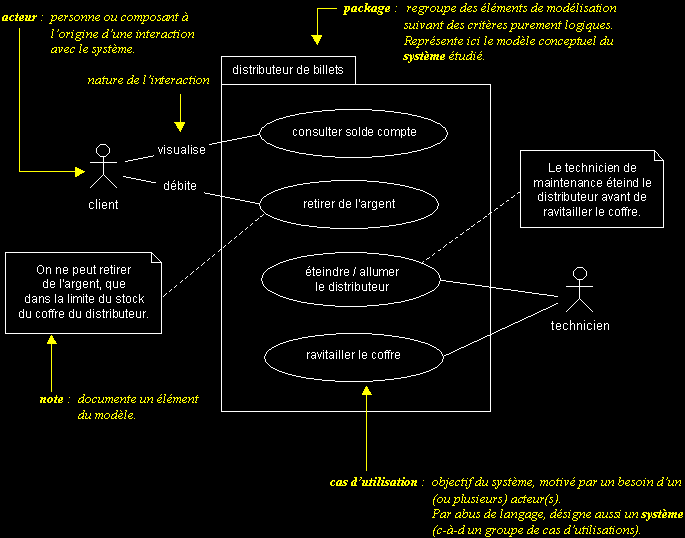
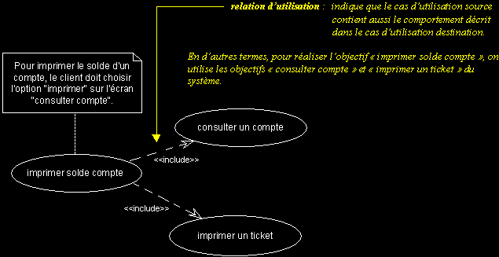
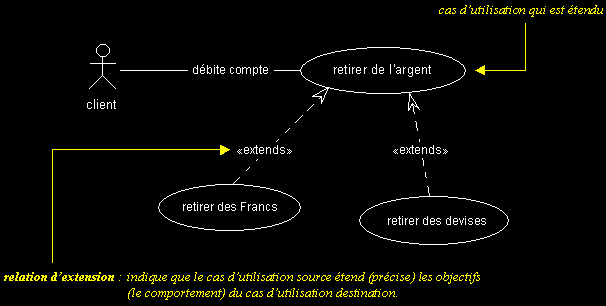

LES CAS D'UTILISATION
q
La conceptualisation : rappel
- Le but de la conceptualisation est de comprendre et structurer les besoins du client.
- Il ne faut pas chercher l'exhaustivité, mais clarifier, filtrer et organiser les besoins !
- Une fois identifiés et structurés, ces besoins :
- définissent le contour du système à modéliser (ils précisent le but à atteindre),
- permettent d'identifier les fonctionnalités principales (critiques) du système.
- Le modèle conceptuel doit permettre une meilleure compréhension du système.
- Le modèle conceptuel doit servir d'interface entre tous les acteurs du projet.
- Les besoins des clients sont des éléments de traçabilité dans un processus intégrant UML.
Le modèle conceptuel joue un rôle central, il est capital de bien le définir !
q Cas d'utilisation (use cases)
- Il s'agit de la solution UML pour représenter le modèle conceptuel.
- Les use cases permettent de structurer les besoins des utilisateurs et les objectifs correspondants d'un système.
- Ils centrent l'expression des exigences du système sur ses utilisateurs : ils partent du principe que les objectifs du système sont tous motivés.
- Ils se limitent aux préoccupations "réelles" des utilisateurs ; ils ne présentent pas de solutions d'implémentation et ne forment pas un inventaire fonctionnel du système.
- Ils identifient les utilisateurs du système (acteurs) et leur interaction avec le système.
- Ils permettent de classer les acteurs et structurer les objectifs du système.
- Ils servent de base à la traçabilité des exigences d'un système dans un processus de développement intégrant UML.
Il était une fois...Le modèle conceptuel est le type de diagramme UML qui possède la notation la plus simple ; mais paradoxalement c'est aussi celui qui est le plus mal compris !
Au début des années 90, Ivar Jacobson (inventeur de OOSE, une des méthodes fondatrices d'UML) a été nommé chef d'un énorme projet informatique chez Ericsson. Le hic, c'est que ce projet était rapidement devenu ingérable, les ingénieurs d'Ericsson avaient accouché d'un monstre. Personne ne savait vraiment quelles étaient les fonctionnalités du produit, ni comment elles étaient assurées, ni comment les faire évoluer...
Classique lorsque les commerciaux promettent monts et merveilles à tous les clients qu'ils démarchent, sans se soucier des contraintes techniques, que les clients ne savent pas exprimer leurs besoins et que les ingénieurs n'ont pas les ressources pour développer le mouton à cinq pattes qui résulte de ce chaos.
Pour éviter de foncer droit dans un mur et mener à bien ce projet critique pour Ericsson, Jacobson a eu une idée. Plutôt que de continuer à construire une tour de Babel, pourquoi ne pas remettre à plat les objectifs réels du projet ? En d'autres termes : quels sont les besoins réels des clients, ceux qui conditionneront la réussite du projet ? Ces besoins critiques, une fois identifiés et structurés, permettront enfin de cerner "ce qui est important pour la réussite du projet".
Le bénéfice de cette démarche simplificatrice est double. D'une part, tous les acteurs du projet ont une meilleure compréhension du système à développer, d'autre part, les besoins des utilisateurs, une fois clarifiés, serviront de fil rouge, tout au long du cycle de développement.
A chaque itération de la phase d'analyse, on clarifie, affine et valide les besoins des utilisateurs ; à chaque itération de la phase de conception et de réalisation, on veille à la prise en compte des besoins des utilisateurs et à chaque itération de la phase de test, on vérifie que les besoins des utilisateurs sont satisfaits.
Simple mais génial. Pour la petite histoire, sachez que grâce à cette démarche initiée par Jacobson, Ericsson a réussi à mener à bien son projet et a gagné une notoriété internationale dans le marché de la commutation.
Morale de cette histoire :
La détermination et la compréhension des besoins sont souvent difficiles car les intervenants sont noyés sous de trop grandes quantités d'informations. Or, comment mener à bien un projet si l'on ne sait pas où l'on va ?
Conclusion : il faut clarifier et organiser les besoins des clients (les modéliser).
Jacobson identifie les caractéristiques suivantes pour les modèles :
- Un modèle est une simplification de la réalité.
- Il permet de mieux comprendre le système qu'on doit développer.
- Les meilleurs modèles sont proches de la réalité.
Les use cases, permettent de modéliser les besoins des clients d'un système et doivent aussi posséder ces caractéristiques.
Ils ne doivent pas chercher l'exhaustivité, mais clarifier, filtrer et organiser les besoins !
Une fois identifiés et structurés, ces besoins :
- définissent le contour du système à modéliser (ils précisent le but à atteindre),
- permettent d'identifier les fonctionnalités principales (critiques) du système.
Les use cases ne doivent donc en aucun cas décrire des solutions d'implémentation. Leur but est justement d'éviter de tomber dans la dérive d'une approche fonctionnelle, où l'on liste une litanie de fonctions que le système doit réaliser.
Bien entendu, rien n'interdit de gérer à l'aide d'outils (Doors, Requisite Pro, etc...) les exigences systèmes à un niveau plus fin et d'en assurer la traçabilité, bien au contraire.
Mais un modèle conceptuel qui identifie les besoins avec un plus grand niveau d'abstraction reste indispensable. Avec des systèmes complexes, filtrer l'information, la simplifier et mieux l'organiser, c'est rendre l'information exploitable. Produisez de l'information éphémère, complexe et confuse, vous obtiendrez un joyeux "désordre" (pour rester poli).
Dernière remarque :
Utilisez les use cases tels qu'ils ont été pensé par leurs créateurs ! UML est issu du terrain. Si vous utilisez les use cases sans avoir en tête la démarche sous-jacente, vous n'en tirerez aucun bénéfice.
q Eléments de base des cas d'utilisation
- Acteur : entité externe qui agit sur le système (opérateur, autre système...).
- L'acteur peut consulter ou modifier l'état du système.
- En réponse à l'action d'un acteur, le système fournit un service qui correspond à son besoin.
- Les acteurs peuvent être classés (hiérarchisés).
- Use case : ensemble d'actions réalisées par le système, en réponse à une action d'un acteur.
- Les uses cases peuvent être structurés.
- Les uses cases peuvent être organisés en paquetages (packages).
- L'ensemble des use cases décrit les objectifs (le but) du système.
q Exemples
Cas d'utilisation standard :

Relation d'utilisation :

Relation d'extension :

|
|
|